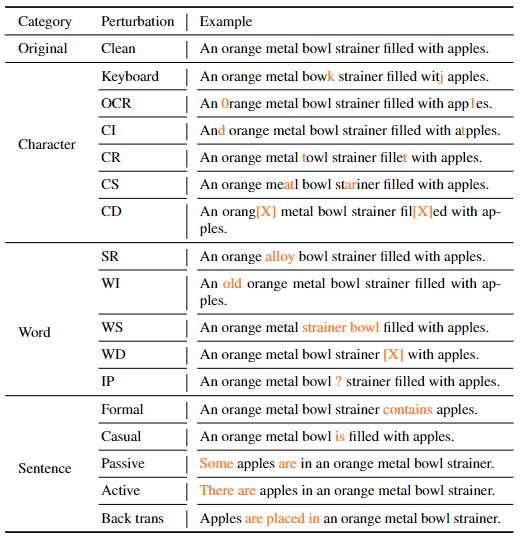

Multimodal models are sensitive to image/text perturbations (original image-text pairs are shown in blue boxes, perturbed ones are in red). Image captioning (Top): Adding image perturbations can result in incorrect captions, e.g., the tabby kitten is mistakenly described as a woman/dog. Text-to-image generation (bottom): Applying text perturbations can result in the generated images containing incomplete visual information, e.g., the tree is missing in the example above.
Abstract
Multimodal image-text models have shown remarkable performance in the past few years. However, evaluating their robustness against distribution shifts is crucial before adopting them in real-world applications.In this paper, we investigate the robustness of nine popular open-sourced image-text models under common perturbations on five tasks (image-text retrieval, visual reasoning, visual entailment, image captioning, and text-to-image generation). In particular, we apply 17 image perturbation and 16 text perturbation techniques on top of existing datasets to serve as the testbed. We observe that multimodal models are sensitive to image and text perturbations, especially to image perturbations. Our investigation also shows an interesting finding that character-level perturbations are the most effective attack for text, and zoom blur is the most effective one for images. We hope our extensive study could shed light on new directions for the development of large multimodal image-text models.
Perturbation Strategies
For image perturbations, the perturbations are grouped into five categories: Noise, Blur, Weather, Digital, and Stylize. Specifically, we use 17 image perturbation techniques, (1) Noise: Gaussian noise, shot noise, impulse noise, speckle noise; (2) Blur: defocus blur, frosted glass blur, motion blur, zoom blur; (3) Weather: snow, frost, fog, brightness; (4) Digital: contrast, elastic, pixelate, JPEG compression; and (5) stylize.
For text perturbations, we design 16 text perturbation techniques grouped into three categories: character-level, word-level, and sentence-level. In detail, for character-level perturbations, we have keyboard, OCR, character insert (CI), character replace (CR), character swap (CS), character delete (CD). These perturbations can be considered as simulating real-world typos or mistakes during typing. For word-level perturbations, we have synonym replacement (SR), word insertion (WR), word swap (WS), word deletion (WD), and insert punctuation (IP). These perturbations aim to simulate different writing habits that people may replace, delete, or add words to express the same meaning. For sentence-level perturbation, we transfer the text style into formal, casual, passive, and active we adopt the back translation method. These perturbations will focus more on language semantics, due to the differences in speaking/writing styles or translation errors.
Image and Text Perturbation Examples
Image Perturbation

Text Perturbation
Evaluation tasks, datasets, models and metrics
Few-Shot Policy Generalization to Out-of-distribution Tasks
We desire to test whether trajectory prompts enable the extrapolation ability when handling tasks with goals out of the training ranges. We sample 8 training tasks in Ant-dir and 3 testing tasks, two of which have indexes smaller than the minimum task index and one larger than the maximum. The task index is proportional to the desired direction angle. We find that Prompt-DT still performs better than baselines with no prompt augmentations.

Sensitivity to Prompt Quantity and Quality
In practice, there may exist a limited amount of high-quality demonstrations for each test task, or the demonstrations may contain trajectories with heterogeneous quality. Our experiments show that, with trajectory prompt sampled from expert demonstrations and expert training dataset, Prompt-DT is not sensitive to the prompt quantity and can successfully extract task-specific information even with prompts containing only a few timesteps. We conduct an ablation study in Cheetah-vel for prompt quality. We find that Prompt-DT could adjust its generated actions according to the given trajectory prompt when training with expert data or medium data. However, when training with random data, only feeding Prompt-DT expert or medium trajectory prompts does not help improve the generalization ability.